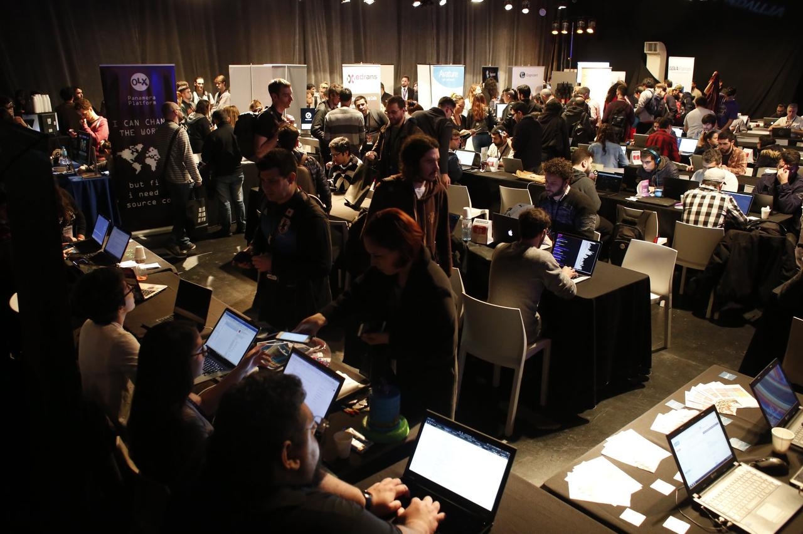

Invitación a nerdear.la
El 17, 18 y 19 de octubre de este año se llevará a cabo Nerdear.la: una conferencia sobre devops, desarrollo y temática nerd en general. Se trata de la sexta edición del evento, y es la primera vez que se hace en Ciudad Cultural Konex. La entrada es 100% gratis, al igual que en años anteriores.

Este año, la conferencia contará con un excelente nivel de charlas que nada tiene que envidiarle a otros eventos, locales o internacionales. El jueves a las 16:35 yo voy a estar dando una charla sobre entornos reproducibles y cómo utilizar Nix como alternativa a Dockerfiles. Acto seguido, GiBA va a hablar sobre una herramienta de logging bastante prometedora que hicieron en Facebook.
Otras charlas que me interesaron:
- Making Illegal States Unrepresentable (in JavaScript): por el título, supongo que va a hablar un poco de Elm, uno de mis lenguajes de programación preferidos, y mostrar como se pueden adaptar ciertas cosas del lenguaje a Javascript.
- Diagnosing bad TDD habits with Dr.TDD: una charla sobre TDD y Smalltalk, que encima tiene un video en su descripción! Definitivamente no me la pienso perder.
- Donald Knuth, TeX y la curva del dragón: hablará de TeX, el predecesor de LaTeX. Si bien no es un sistema que me guste mucho, tiene una historia muy interesante, en especial por tratarse de uno de los proyectos más importantes de Donald Knuth.
- Standup Matemático: por si creían que para llamarse "nerdear.la" le faltaban cosas nerd.
- 1969 - 2019: 50 years of UNIX and the landing on the Moon: charla de cierre dada por el conocido Jon «maddog» Hall. No pude asistir a la charla que dio la última vez que estuvo en Argentina, así que esta es mi oportunidad de hacerlo!
También estarán dando un taller de introducción a Bash dictado por las chicas de LinuxChix Argentina que vengo recomendando hace unos días a gente con poca experiencia con el uso de la terminal en GNU/Linux. Es de cupo limitado así que hay que inscribirse primero.
Y para quienes tengan que trabajar durante los días de la conferencia, también contará con un espacio de coworking que, al menos hasta el año pasado, siempre contó con una buena conexión a internet.
Para más información sobre el evento, puden visitar su sitio https://nerdear.la/.
Saludos!
Apéndice
No encontré en la página la descripción completa de mi charla, así que la dejo por acá para quien esté interesado/a:
“It works on my machine!” Seguramente todo desarrollaror/a haya usado esta frase en algún momento de su carrera para justificar la presencia de un bug. Decir esto implica, más allá del bug en cuestión, que hay una diferencia no muy evidente (pero sí perjudicial) entre los entornos de desarrollo y el productivo.
En los últimos años se trató de minimizar estas diferencias por medio de entornos reproducibles. Las herramientas de cloud computing, infrastructure as code y principalmente el uso de containers facilitaron esto. Sin embargo, estas herramientas no siempre garantizan que lo que hagamos sea reproducible. Además, en varios casos su complejidad de uso hace que se usen solamente en entornos de staging y no en las máquinas de los desarrolladores, lo que nos vuelve a llevar al “it works on my machine”.
Voy a hablar de Nix, un lenguaje de programación, package manager y build tool que tiene a la reproducibilidad como idea principal. Nix permite construir un entorno reproducible sin tener el overhead que traen el uso de containers o VMs (aunque también se lleva muy bien con estos). De esta forma, resulta muy conveniente tanto al momento de desarrollar como al servir el software en producción.
Comments
Comments powered by Disqus